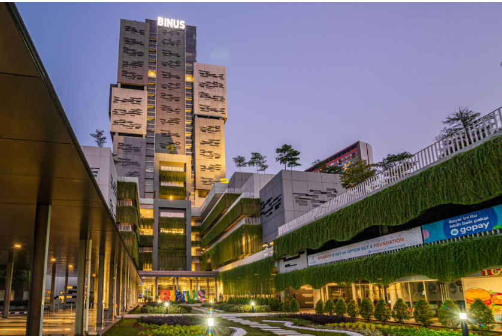

INTRODUCTION
I am a Computer Science student at BINUS University specializing in Data Analytics and Artificial Intelligence . Passionate about transforming complex datasets into actionable insights and building data driven technology solutions.
EDUCATION
COMPUTER SCIENCE
2024 – PRESENT

ORGANIZATIONAL & LEADERSHIP EXPERIENCE
AIESEC FUTURE LEADERS COACH & DELEGATE
- ▪ Mentored delegates in public speaking and core leadership capabilities.
- ▪ Facilitated team case study analysis and problem-solving sessions.
- ▪ Participated in national leadership training programs.
AIESEC GLOBAL VOLUNTEER VOLUNTEER EDUCATOR — DI LINH, VIETNAM | 2026
- ▪ Designed English learning materials and taught local students.
- ▪ Collaborated with an international team to deliver interactive, cross-cultural learning experiences.
- ▪ Facilitated cultural exchange activities to foster global awareness.
SKILLS & EXPERTISE
● TECHNICAL SKILLS
DATA ANALYTICS & BI
DATA ANALYTICS • DATA VISUALIZATION • DATA MINING • POWER BI
DATABASE & QUERYING
SQL • DATABASE TECHNOLOGY • DATABASE DESIGN
PROGRAMMING & LIBRARIES
PYTHON • PANDAS • NUMPY • MATPLOTLIB • SEABORN
MATH & AI METHODS
BASIC STATISTICS • LINEAR ALGEBRA • PREDICTIVE ANALYTICS • AI / MACHINE LEARNING
● SOFT SKILLS
- Problem Solving
- Data Storytelling
- Analytical Mindset
- Cross Functional Communication
- Leadership